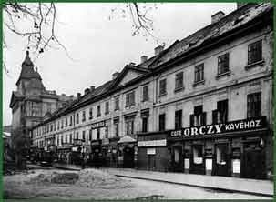

|  | ||
| The monumental building standing at the corner of Király Street, close to the Jewish Market, was the property of the Orczy family. Jews coming to Pest found shelter here and a commercial and religious center from the end of the 18th century. In the first half of the 19th century the building housed the synagogues of both the strictly traditional and the reformist communities. In 1829 a second floor was added to the building. It was demolished in 1936. | ||